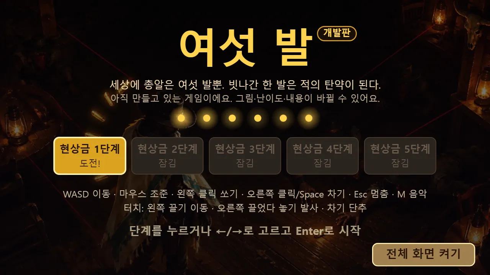
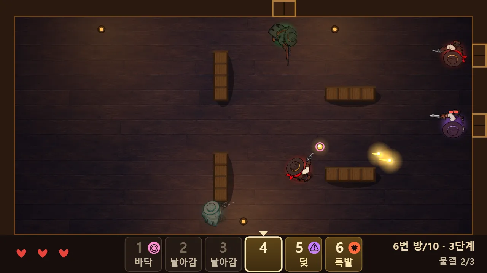
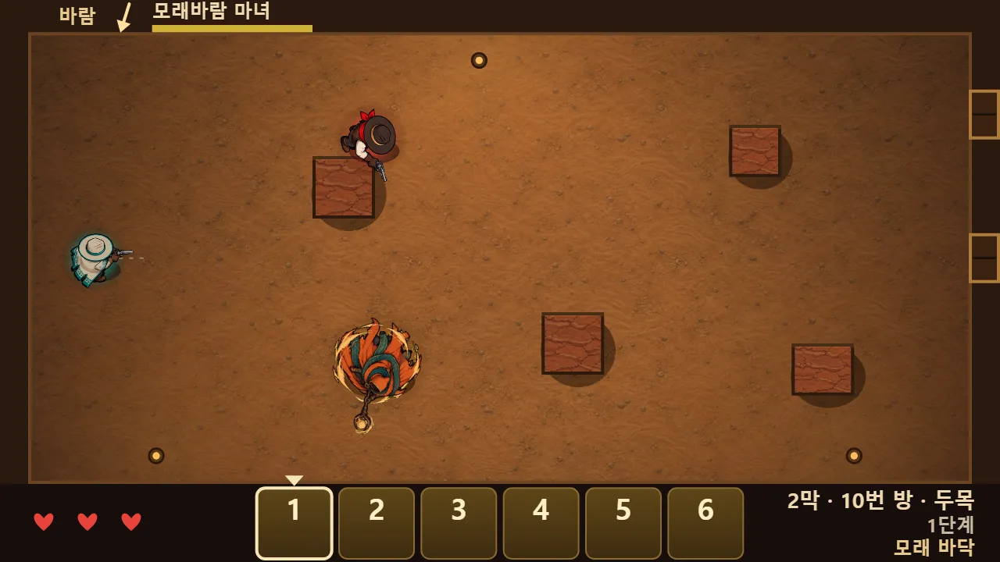
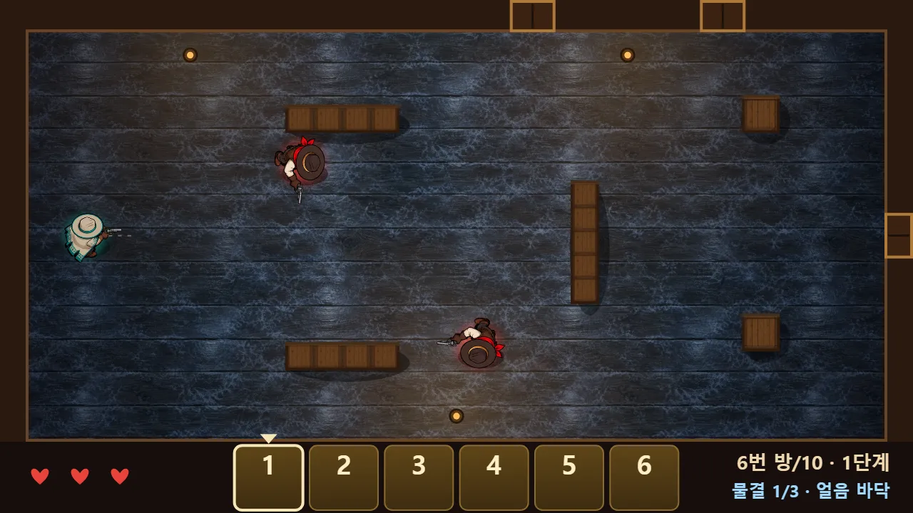

✈️ 액션 게임 · 무료 · 설치 없음
여섯 발 (개발판)
“빗나간 한 발은 적의 탄약이 된다”
- 총알은 언제나 여섯 발
- 방 10개 · 마지막은 두목
- 현상금 1~5단계 · 각인 8종
- 개발판: 계속 바뀌어요
회원가입 없이 누르면 바로 시작돼요
어떤 게임인가요?
밤의 사막 술집. 내 손에는 총알 여섯 발이 전부예요. 쏜 총알은 벽에 튕기다 바닥에 떨어지고, 건달들은 그 총알을 먼저 주우려고 달려와요. 적이 주운 총알은 빨간 조준선과 함께 나를 노려요.
그래서 한 발 한 발이 아까워요. 쏘고, 떨어진 총알을 줍고, 발로 차서 맞히고, 빨간 선을 보면 피해야 해요. 벽에 튕긴 내 총알에 내가 맞을 수도 있어요. 적은 문으로 몇 번에 나눠 들어오고, 같은 여섯 발로 끝까지 버텨야 해요.
방을 하나 깰 때마다 총알 하나에 각인을 새겨요. 주인에게 돌아오는 「귀환」, 멈출 때 터지는 「폭발」, 적이 주우면 터지는 「덫」처럼 총알마다 성격이 생겨요. 10번 방의 두목 「여섯손가락 잭」을 쓰러뜨리면 다음 현상금 단계와 새 각인이 열려요.
이렇게 해요
- STEP 1
쏘고 피해요
컴퓨터는 WASD로 움직이고 마우스로 겨눠 왼쪽 클릭으로 쏴요. 휴대폰은 왼쪽을 끌어 움직이고, 오른쪽을 끌었다 놓으면 쏴요.
- STEP 2
총알을 주워요
빗나간 총알은 바닥에서 빛나요. 걸어가서 지나가면 주워요. 적보다 먼저 주워야 해요. 오른쪽 클릭이나 Space(휴대폰은 「차기」 단추)로 바닥 총알을 차서 맞힐 수도 있어요.
- STEP 3
각인을 새겨요
방을 깨면 각인 카드 세 장 중 하나를 고르고, 새길 총알 번호를 골라요. 아래 탄창 여섯 칸에 각인이 보여요.



🛠 개발판이에요
- 지금 들어 있는 것: 방 10개(문으로 나뉘어 들어오는 적), 적 3종과 두목, 현상금 1~5단계, 각인 8종, 처음 하는 사람용 안내, 서부풍 음악과 효과음
- 앞으로 들어올 것: 새 지역(광산·열차)과 새 두목, 하루 한 번 같은 판에 도전하는 일일 도전, 새 주인공
- 그림·난이도·내용은 해 본 분들의 반응을 보고 계속 바뀌어요. 기록이 처음부터 다시 시작될 수도 있어요.
- ⏸ Esc나 멈춤 단추로 언제든 멈출 수 있고, 다른 창으로 넘어가면 저절로 멈춰요. M 키로 음악을 켜고 꺼요.
한 판은 5~10분쯤이에요. 처음에는 두목까지 가기 어려울 수 있어요. 빨간 선을 보면 먼저 피하세요.
이런 분께 추천해요
- 한 발 한 발 머리를 쓰는 슈팅을 좋아하는 분
- 짧게 한 판, 지면 바로 한 판 더 하고 싶은 분
- 아직 만들고 있는 게임을 먼저 해 보고 싶은 분
총알을 다 쏘기 전에 멈추세요. 손에 두세 발을 남기고, 빗나간 총알 쪽으로 적을 끌어들이지 않게 움직이면 오래 버틸 수 있어요.
📱 어떤 기기에서 하면 좋을까요?
- 가장 좋아요컴퓨터·노트북 키보드·마우스
마우스로 정확히 겨눌 수 있어서 가장 편해요. 시작하면 전체 화면이 되고, F 키로 켜고 꺼요.
- 좋아요태블릿 가로 화면
넓은 화면에서 두 손가락으로 이동과 조준을 나눠 해요.
- 좋아요휴대폰 가로 화면
가로로 눕혀서 해요. 화면이 작은 만큼 조준이 조금 어려워요.
오른쪽 위 메뉴(⋮ 또는 ···)에서 「다른 브라우저로 열기」를 눌러 크롬이나 사파리로 열어 주세요. 앱 안에서는 전체 화면이 안 되고 저장이 풀릴 수 있어요.
🍎 아이폰·아이패드에서는
- ① 사파리로 열기
카카오톡이나 네이버 앱 안에서는 화면이 좁아요. 「다른 브라우저로 열기」나 사파리로 열어 주세요.
- ② 홈 화면에 추가하기
아이폰은 전체 화면 기능이 막혀 있어요. 공유 버튼(□↑) → 「홈 화면에 추가」로 열면 주소창 없이 꽉 찬 가로 화면이 돼요.
- ③ 소리
무음 스위치가 켜져 있으면 소리가 나지 않아요. 음악은 멈춤 화면에서 켜고 끌 수 있어요.
🤖 갤럭시 등 안드로이드에서는
크롬이나 삼성 인터넷으로 열고, 폰을 가로로 눕혀 시작하면 전체 화면으로 바뀌어요.
▶ 바로 해 보기
설치도, 회원가입도 필요 없어요.
여섯 발 시작하기game.edoori.co.kr/sixshots/